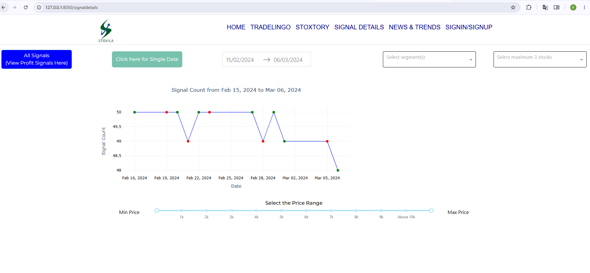
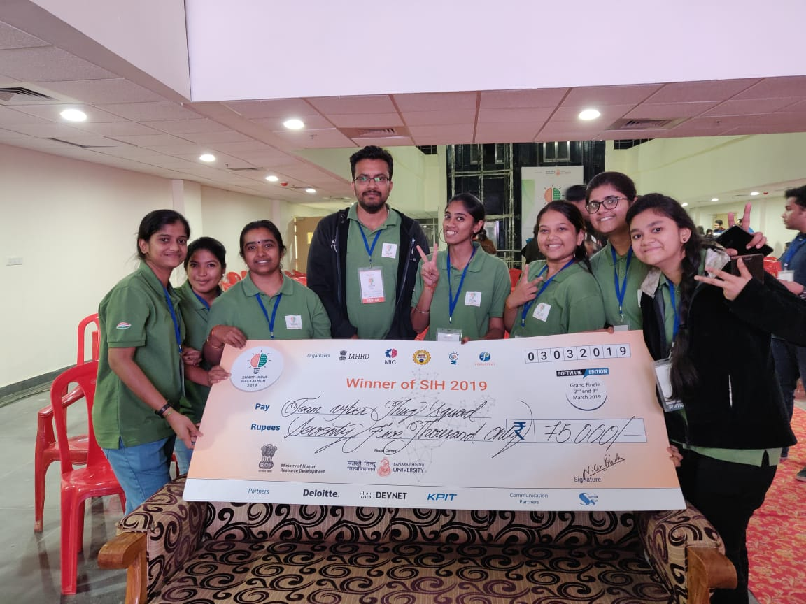

Rakhitha Thottingal
Data & Process Analystin — macht aus Rohsignalen Entscheidungen
Ich baue Echtzeit-Datenpipelines, prüfe technische Prozesse auf Qualität und entwickle Dashboards, die wirklich genutzt werden — mit Python, SQL und einer gesunden Portion Neugier für die Ursache.
Über mich
Ich bin Data-Analystin mit über drei Jahren praktischer Erfahrung an der Schnittstelle von technischer Prozessqualität und angewandter Datenanalyse — von der Validierung von ERP-Datenflüssen über den Aufbau von Live-Marktdaten-Pipelines bis hin zu Dashboards, mit denen auch nicht-technische Stakeholder direkt arbeiten können.
Aktuell lebe ich in Duisburg und studiere M.Sc. Technische Logistik an der Universität Duisburg-Essen, während ich parallel als Administration Support arbeite. Mich interessiert vor allem, warum Zahlen nicht passen — nicht nur, dass sie es nicht tun.
Durch meine mehr als einjährige Arbeit im deutschen Büroumfeld kommuniziere ich im beruflichen Alltag sicher auf Deutsch. Aktuell befinde ich mich auf B1-Niveau mit klarem Ziel Richtung B2.
Berufliche Erfahrung
- Überwachung und Validierung kritischer Logistik- und Abrechnungsdaten in Microsoft Dynamics 365 Business Central
- Analyse operativer Abläufe und Implementierung von Tracking-Protokollen zur Vermeidung von Engpässen
- Technische und operative Abstimmung zwischen internationalen Herstellern und internen Teams
- Aufbau einer skalierbaren Echtzeit-Datenpipeline zur Erfassung von Live-Marktdaten (NSE) über API und RabbitMQ
- Implementierung von RSI-, MACD- und VWAP-Algorithmen in Python zur automatisierten Signalgenerierung
- Entwicklung einer interaktiven Plotly-Dash-Webanwendung zur Signal-, Qualitäts- und Performance-Analyse
- Restrukturierung von SQLite/SQL-Datenbanken, was zu spürbar schnelleren Abfragezeiten führte
- Administration und Performance-Tuning globaler HR-Datenbanksysteme mittels SQL und SQL Server Profiler
- Aufbau von SSRS-Reporting-Strukturen und Entwicklung maßgeschneiderter SQL-Abfragen
- Entwicklung einer Web-Applikation und relationaler SQL/PL-SQL-Datenbanken zur strukturierten Datenerfassung
- Erstellung von Power-BI-Dashboards zur Prozess-Transparenz sowie Implementierung von Datenmaskierung und Zugriffskontrollen
Projekte

Echtzeit-Signal-Engine für NSE-Marktdaten — RabbitMQ-Ingestion, RSI/MACD/VWAP-basierte Kauf-/Verkaufssignale, Telegram-Benachrichtigungen und ein filterbares Plotly-Dash-Frontend zur Analyse der Signalgenauigkeit.
Validierungsschicht für Logistik- und Abrechnungsdaten in MS Dynamics 365 Business Central — Tracking-Protokolle zur frühzeitigen Erkennung von Anomalien.
Performance-Tuning globaler HR-Datenbanksysteme sowie Aufbau von SSRS-Reporting-Strukturen für verlässliche Qualitätskennzahlen.
Entwicklung eines Online-Überwachungssystems für Stickmaschinen mit Machine Learning, Computer Vision und Edge Computing, inklusive Slack- und Twilio-Integration für Echtzeit-Benachrichtigungen.
Sensorbasiertes Frühwarnsystem zum Schutz von Ackerland vor Wildtieren — mit Kamera, Elektrozaun, Beleuchtung und LCD-Display, gesteuert über einen Mikrocontroller mit Python.
Erfolge & Zertifikate

Kenntnisse
Lass uns sprechen
Offen für Junior-/Mid-Level-Positionen als Data Analyst in Deutschland. Am schnellsten erreichst du mich per E-Mail — ich schicke gerne meinen Lebenslauf oder gehe die Projekte oben im Detail durch.